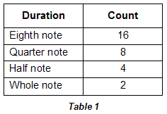
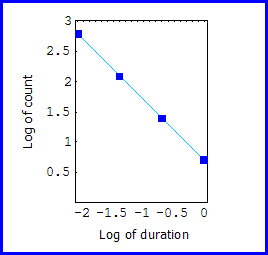

| Here is a table of the durations and respective counts contained in each melody. |
|  |
| Based on the table, we can use the logs of the set of ordered pairs,
{ |
|  |
| Because the resulting points lie on a straight line, we can assert that both melodies obey a power law distribution. |
| However, being that the examples are relatively short, we need to be careful about how we characterize their distribution of elements; each collection of notes represents too small a sample on which to make broad statistical generalizations. For the sake of argument, though, we can imagine each melody as part of a larger composition that continues in a similar fashion. |
Return to Duration Scaling.
© 2004 Harlan Brothers